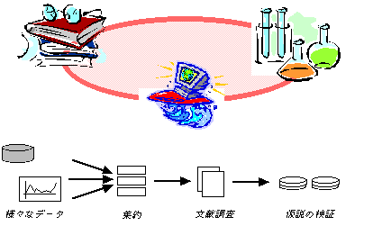

産業技術総合研究所 生命情報科学研究センター
作者 上野 豊
home / download / examples / doc / english
GUPPYは、遺伝子配列におけるデータの意味を注釈した情報を、わかりやすいグラフィカルなレイアウトに表示するプログラムです。これまでにない高速な表示と対話操作を実現し、ゲノムデータの全体から、注目する領域を選択し、個々の塩基配列までスムーズにズームしていくことができます。必ずしもネットワークに接続している必要はなく、GUPPYはディスクに保存されたデータを高速に可視化します。さらに、Webページへのリンクや、作成したレイアウトの印刷サポート等、生物学者や関連する技術者のための多様なメディアの活用を支援するために開発されました。
(図）ヒト２１番染色体のシークエンスマップを表示した例
遺伝子データベースでは、注釈情報を効率的に記述するのに、様々な手法が採用されてきましが、異種データを比較したり、実験によって得られたデータを統合するための処理は容易ではありません。GUPPYでは、必要となるデータ変換を容易にするプログラミング言語を採用しています。既存の安定したプログラミング言語処理系の中から重要な機能を吟味してLua言語を選択しました。階層構造を持つデータはLua言語処理系で管理され、それらを再編する手続きと表示レイアウトを記述するプログラムをスクリプトとして記述しています。高速なグラフィックス処理部分はＣ言語によって書かれています。

現在は研究用の試作段階なので、利用するためには、C言語とUNIXの知識が必要になります。実際のプロジェクトに適用するには作業が必要かもしれませし、商品ソフトウエアの様なサービスを提供するものではありませんが、広く活用されることを目標に公開しています。非営利の目的にライセンスを準備しているので、ダウンロードページ、exampleページから、評価いただきフィードバックを得ることが改良に必要と考えています。
GUPPYは生命情報科学（バイオインフォマティックス）における様々なデータ処理の結果表示のために開発されました。これまでに、ヒトゲノムデータにおける新規遺伝子の探索のために、異種のジーンファインディング手法を実施した結果を集約する作業への適用を進めています。解析条件の違いによる結果の比較検討をスムーズに行うため、専用のスクリプトを用いて処理を自動化することにより、効率化と解析に伴う様々な問題解決を支援できるシステムを目指しています。今後は、比較ゲノムの作業も考慮して開発を継続しています。

(C)Copyright 2003, AIST